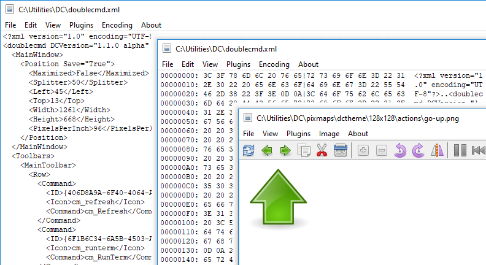
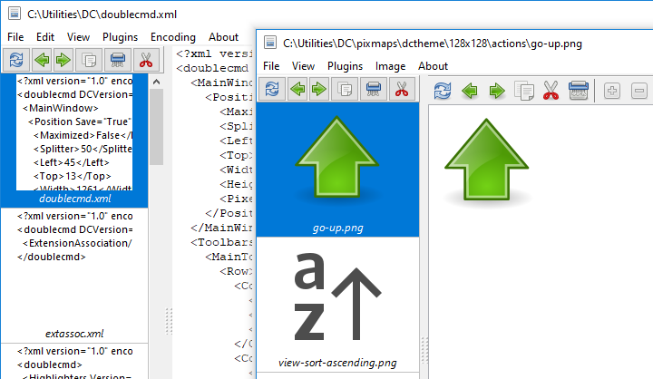

内置查看器旨在以文本、十六进制或二进制格式以及图像文件查看任何大小的文件。

选定的文本将自动复制到剪贴板，要禁用此功能，我们可以使用 <AutoCopy> 参数。
默认情况下，查看器（内部命令 cm_View ）调用分配给 F3 键，我们可以在 按键 > 快捷键 设置部分更改此设置。如果选择了多个文件，将打开第一个选定的文件，我们可以使用 上一个文件 和 下一个文件 命令切换这些文件（否则，这些命令将加载当前目录中的文件）。
1) 支持的图像格式：BMP、CUR、GIF、ICNS、ICO、JPEG、PNG、PNM（PBM、PGM 和 PPM）、PSD、SVG/SVGZ、TIFF、XPM。此外，如果所需的库可用：
HEIF/HEIC 和 AVIF: libheif.dll （Windows）或 libheif.so.1 （Linux 和其他类 Unix 系统）。
WebP: libwebp.so.n ，其中“n”是 7、6 或 5（Linux 和其他类 Unix 系统）。
SVG/SVGZ: librsvg-2-2.dll , libcairo-2.dll 和 libgobject-2.0-0.dll （Windows）或 librsvg-2.so.2 , libcairo.so.2 和 libgobject-2.0.so.0 （Linux 和其他类 Unix 系统）。如果这些文件可用，Double Commander 将使用 librsvg 库，而不是内置的 Image32 图形库。
Double Commander支持 TurboJPEG 库，它是一个 JPEG 编解码器，使用 SIMD 指令加速图像的解码和编码： libturbojpeg.dll （Windows）， libturbojpeg.so.0 （Linux 和其他类 Unix 系统）或 libturbojpeg.dylib （macOS）。
注意：在 Windows 中，库必须位于 Double Commander 可执行文件附近或在 PATH 中。
2) Double Commander支持 Windows 图像组件(Windows Vista 及更新版本)：图像组件(WIC)提供了一个可扩展的框架用于处理图像。WIC 包括几个内置编解码器（BMP、DDS、GIF、ICO、JPEG、JPEG XR、PNG 和 TIFF），此外还有可免费使用和专有的 RAW 图像格式、HEIF/HEIC、WebP 的外部编解码器。Double Commander将跳过 BMP、GIF、ICO、JPEG、PNG 和 TIFF 的编解码器，因为这些格式已经得到支持。
内置查看器支持保存为以下图像格式：BMP、ICO、JPEG（我们可以选择质量从 1 到 100；默认值为 80，见<JpegQuality>）、PNG（Double Commander将使用与原始图像相同的颜色深度）和 PNM（Double Commander将使用二进制格式，颜色深度将自动设置：每像素 1、8 或 24 位）。
注意：在修改图像时，我们必须使用 保存 或 另存为 命令保存所有更改：Double Commander在关闭查看器窗口或切换到另一个文件时不会检查文件的状态（是否已更改）。
我们可以在按键 > 快捷键设置部分为查看器中可用的命令分配或更改快捷键（切换到查看器类别）。快捷键可以分别为文本模式和图像查看模式设置。
项目 上一个 和 下一个 用于加载目录中的上一个或下一个文件。如果选择了多个文件，命令将加载这些文件。文件面板中的排序顺序将被使用。
项目 保存 和 另存为... 仅在查看图像时可用。
打印... – 打开一个系统对话框以发送文件进行打印。仅在使用支持打印文件的插件查看时，才能进行打印。
打印设置... – 打开一个对话框以设置打印边距（左、右、上和下页边距）。
重新加载 – Double Commander将强制重新读取文件，而无需关闭查看器窗口。如果文件已被外部程序修改，这样做很方便。
自动重载 – 仅适用于文本模式：如果启用，Double Commander 将每 2 秒检查一次文件大小，如果发生变化，将重新读取文件并将其内容滚动到末尾。这对于查看不断更新的日志文件非常方便。此模式仅适用于当前文件，在切换到另一个文件或关闭查看器窗口时将被禁用。如果启用，Double Commander 将在文件名之前的状态栏中显示一个星号 "*"。
退出 – 关闭查看器窗口。
菜单包含用于选择和复制文本的命令，以及用于搜索正在查看的文件内容的命令：查找、查找下一个和查找上一个。
搜索选项：
区分大小写 – 表示大写字母与小写字母应当区分，例如“Fallout”和“fallout”将是不同的。
十六进制 – 搜索十六进制字符（不区分大小写，字符之间可以有或没有空格，例如“C0 C1 C2”或“c0c1c2”）。
正则表达式 – 如果启用，我们可以使用 正则表达式。
向后 – 切换搜索方向：从文件末尾开始搜索，而不是从开头搜索。
此菜单用于切换查看模式，并包含几个附加选项。
预览 – 显示或隐藏预览面板。
该程序会自动选择适当的文件查看模式，以下项目允许强制切换
以文本形式显示 – 以纯文本形式显示文件内容（或控制台命令输出，见 文件关联）。我们可以设置在换行之前每行显示的最大字符数（默认 1024）。
以二进制形式显示 – 以原样显示文件内容。不可打印字符将显示为点，但在复制文本时，将尊重控制字符（换行、回车、制表符等）。使用固定的行宽为 80 个字符。
以十六进制显示 – 窗口将显示三列：文件开头的偏移量（以字节为单位）、16 个字符的十六进制表示和相同的 16 个字符的纯文本表示。不可打印字符将显示为点。当选择第二列中的值时，第三列中相应的符号将被选中（反之亦然）。
以十进制显示 – 与之前相似，但字节将以十进制表示。
以书籍形式显示 – 一种特殊的查看模式：文本将以多列形式显示（像书籍的展开页或报纸）。我们可以设置字体和大小、文本和背景颜色，以及列数（1、2 或 3）。
图形 – 切换到图像查看。请参阅页面开头支持的图像格式列表。
插件 – 使用 WLX 插件查看。如果所选文件可以由多个已安装的插件打开，则重复调用此命令将循环切换它们。
Office XML（仅文本） – 该查看器将显示来自基于 XML 的办公文档的文本：Microsoft Office（DOCX，XLSX）和 OpenOffice/LibreOffice（ODT，ODS）。没有文本格式，但保留段落。
代码 – 该查看器将以代码视图模式显示所选文件：带有语法高亮和行号。将使用与内置文本编辑器相同的高亮规则和扩展名列表（更多细节请见这里）。在此模式下，查看器使用内置编辑器的设置，另请参见<SynEditMask>的描述。
插件优先于其他支持的视图模式。
换行文本 – 启用或禁用在窗口中不适合的行（按单词边界）换行。
显示文本光标 – 启用闪烁文本光标的显示。
菜单包含所有已添加和启用的 WLX 插件的列表。菜单的第一部分将包含适合当前文件的插件（Double Commander检查检测字符串），所有其他插件将列在第二部分。
在未排序的情况下，使用插件在相应设置部分添加时的相同顺序。
在以文本模式查看文件时：可用文本编码的菜单列表，默认启用自动检测。
使用插件时，此菜单仅包含三个项目：
自动检测 – 自动编码检测。
ANSI – 默认系统 ANSI 编码（取决于系统区域设置）。
OEM – 默认系统 OEM (DOS) 编码（取决于系统区域设置）。
图像菜单在查看 GIF 文件时将不可用。
拉伸 – 调整图像大小以填充查看窗口（宽高比将自动保存）。
仅拉伸大图 – 仅在图像大于当前窗口大小时调整图像大小（宽高比将自动保存）。
居中 – 图像将显示在查看窗口的中心，而不是左上角。
显示透明度 – 允许使用棋盘格图案作为图像透明部分的背景。
旋转子菜单包含几个相似的操作：
前三个命令围绕图像中心按指定的度数旋转图像：+ 90（向右旋转 90 度），+ 180 和 - 90（向左旋转 90 度）。
水平翻转 – 水平反转图像，即从左到右。
垂直翻转 – 将图像垂直反转，即从上到下。
放大 和 缩小 – 用于改变图像比例的命令。
全屏 – 将窗口切换到全屏模式（窗口内容不包含操作系统的典型窗口边框界面）。此模式不仅在查看图像时可用，只需使用快捷键（默认情况下为 Alt+Enter ）。
截图子菜单 - 立即或延迟（3 或 5 秒）创建桌面的截图。
使用插件时，此菜单仅包含三个项目：拉伸、仅拉伸大图和居中。
仅仅是一个名称。
内部查看器的多个命令和额外工具，集中在工具栏中。仅在查看图像时使用。
重新加载当前文件 – Double Commander将强制重新读取文件，而不关闭查看器窗口。如果文件已被外部程序修改，这样做很方便。
按钮 加载上一个文件 和 加载下一个文件 用于加载目录中的上一个或下一个文件。文件面板中的排序顺序被使用。
复制文件 – 请参见 复制/移动文件。
移动文件 – 参见 复制/移动文件。
删除文件 – 将删除正在查看的文件，并会请求确认。
放大 和 缩小 – 用于改变图像比例的命令。
旋转 -90 度 – 将图像绕其中心向左旋转 90 度。
旋转 +90 度 – 将图像绕其中心向右旋转 90 度。
镜像 – 水平镜像 命令：将图像水平反转，即从左到右。
下一个组仅用于 GIF 动画：
暂停/播放 – 暂停动画播放。
上一帧 和 下一帧 – 在动画帧之间来回切换。
导出帧 – 允许保存当前动画帧。
下一组按钮与选择相关：
高亮 – 打开选择工具（矩形）。
裁剪 – 通过选择裁剪图像。
红眼 – 红眼去除功能。
下一组按钮与绘图相关：
绘画 – 启用绘图工具。
撤销 – 取消最后一个操作。
选择绘图工具的菜单：钢笔、矩形和椭圆。
宽度 – 选择线条宽度的菜单（从 1 到 25 像素）。
颜色 – 允许设置线条的颜色。
调整大小 – 图像调整大小工具允许指定宽度和高度（宽高比将自动保存）。
全屏 – 切换窗口到全屏模式（窗口内容不包含操作系统的典型窗口边框界面）和返回。此模式不仅在查看图像时可用，只需使用快捷键（默认情况下为 Alt+Enter ）。
当窗口扩展到全屏时，将会出现一个额外的 幻灯片放映 按钮：我们可以启用自动加载当前目录中的下一张图片，并设置文件显示时间（从 1 到 25 秒）。
状态栏的外观和内容取决于查看模式：文本、图像或 WLX 插件。
在状态栏的开头，显示当前目录中打开文件的数量和文件的总数量。
文件内容中的位置（以字节和百分比表示）、文件大小和文本编码。

图像：当前分辨率（以像素和百分比表示）、实际文件分辨率和选择大小（使用选择工具时）。

WLX 插件：插件名称和编码。
在状态栏的末尾，显示正在查看的文件的完整名称。
窗口左侧的面板中，目录文件以缩略图的形式显示（缩略图下方有文件名）。这看起来像文件面板中的缩略图模式。

文件面板中使用了排序顺序。启动查看器时使用的文件将始终是列表中的第一个。
预览面板可以展开以显示多列缩略图列表。
带有多个常用功能的独立工具栏：重新加载当前文件、加载上一个文件、加载下一个文件、复制文件、删除文件和移动文件，请参见上面的类似按钮的描述。
查看器可以使用快捷键或工具栏或预览面板上的按钮复制或移动查看的文件（内部查看器命令 cm_CopyFile 和 cm_MoveFile ）。我们可以指定最多 5 个目录并在它们之间切换：

这在我们需要将查看的文件放入不同目录或制作额外副本时很方便。
附加文件查看模式（默认 Ctrl+Q ）：内容将显示在相对的（非活动）文件面板中，而不是单独的窗口。当我们导航到下一个项目时，显示的内容会更新，这使得通过在文件面板中移动光标即可查看文件内容。
快速查看可以通过再次按下 Ctrl+Q 来禁用，当切换任何面板（活动或非活动）到另一个标签时，它也会被禁用。
在文件关联设置中添加的“查看”操作会被忽略，除了使用 {!DC-VIEWER} 宏启动的应用程序。
并非所有查看器命令都可以在此模式下工作，例如，加载目录中上一个或下一个文件的命令（默认情况下为 P 和 N ）。
右键单击状态栏会弹出一个菜单，其中包含几个子菜单（取决于当前模式）：
“插件”模式：“查看”、“插件”、“编码”和“图像”；
“图形”模式：“视图”、“插件”和“图像”；
其他模式：“视图”、“插件”和“编码”。
（请参见上面的描述。）
某些界面元素可能会被隐藏（例如，在“图形”模式下查看图像时，Double Commander会隐藏工具栏）。对于插件没有一般规则或建议，决定由插件作者做出。